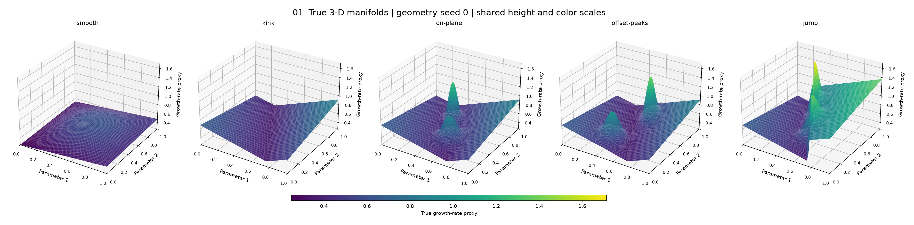
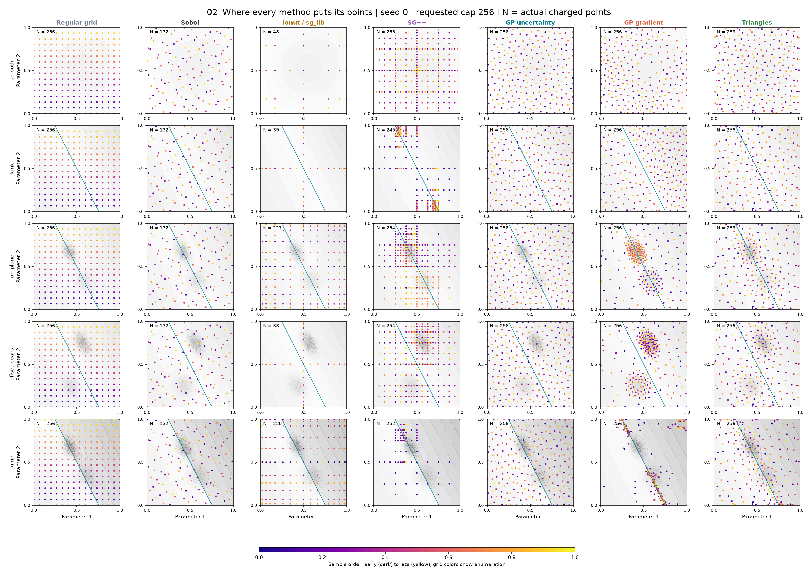
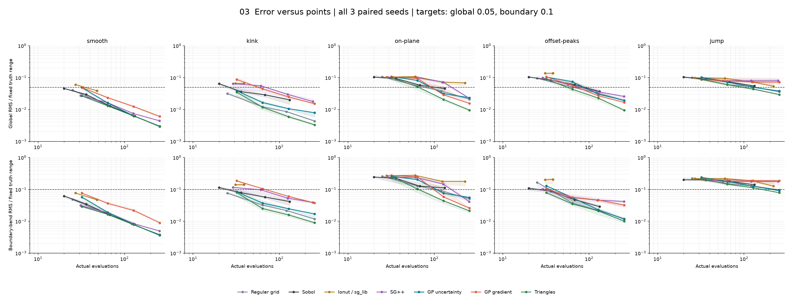
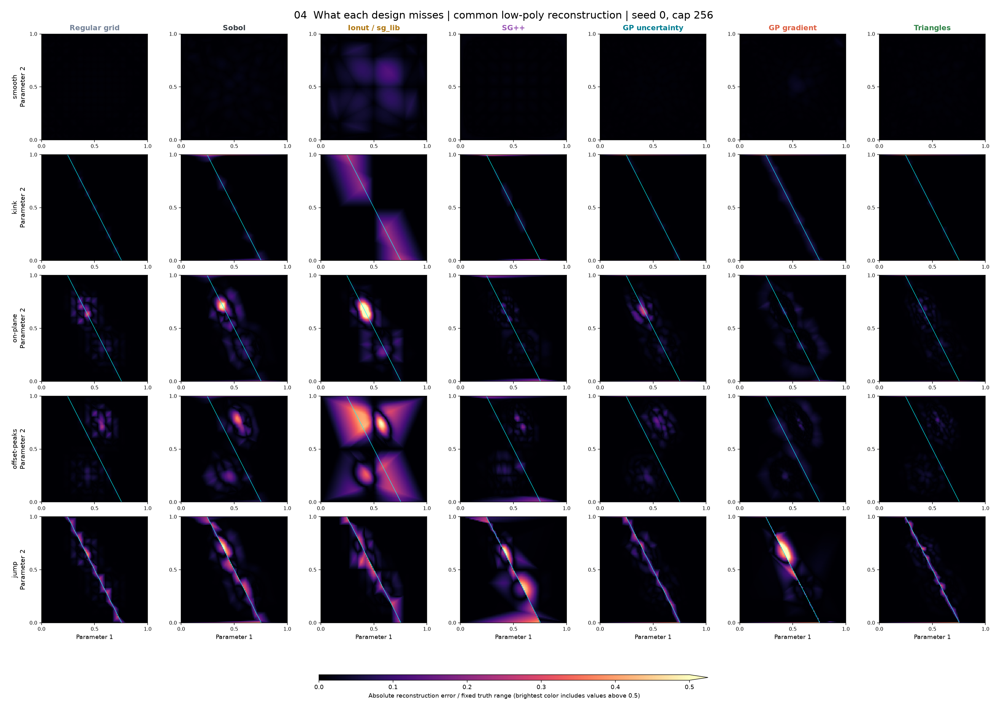
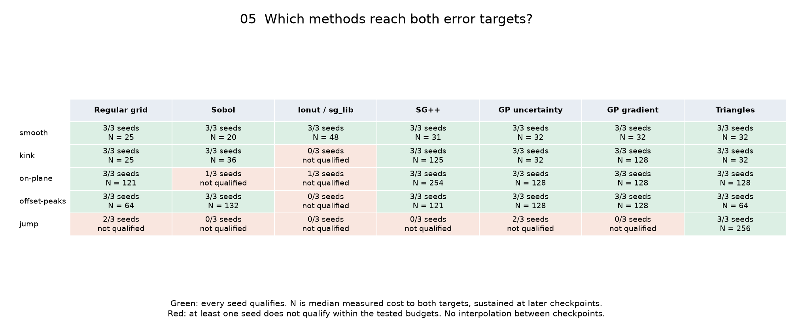

Start with the reference surfaces, compare the point placement, then judge error per evaluation. The placement maps show one seed; the error curves summarize all paired seeds.
Plot-reading guide · Detailed results · Saved data
Exact synthetic surfaces, before any method samples them. All views share the same camera, height range and color scale. The jump surface has a genuine discontinuity; rendered mesh cells visually bridge its edge.

Rows are test surfaces; columns are methods. Gray shading shows truth, teal marks the crossing/jump boundary, and dots show sampled locations. These are final-cap snapshots of one paired seed, not averages. N includes the four shared corner evaluations; some methods underspend.

Each panel overlays all methods. Top: global RMS; bottom: boundary-band RMS. Lines are medians and shading is the interquartile spread across paired seeds/geometries, not confidence intervals. Both axes use identical limits in all panels. Dashed lines show the qualification targets. Lower and further left is better; placement alone is not a score.

The same row/column layout as the placement sheet, using the same seed and cap. Dark is accurate; bright is inaccurate. A single normalized color scale makes methods comparable. Values above 0.5 saturate at the brightest color. Cyan marks the true boundary.

A method qualifies only when every seed reaches both targets and stays below them at subsequent tested checkpoints. N is the median measured qualifying cost. Green does not imply that a method wins every case or is ready for GENE.

| Case | Regular grid | Sobol | Ionut / sg_lib | SG++ | GP uncertainty | GP gradient | Triangles |
|---|---|---|---|---|---|---|---|
| smooth | 3/3 seeds N = 25 | 3/3 seeds N = 20 | 3/3 seeds N = 48 | 3/3 seeds N = 31 | 3/3 seeds N = 32 | 3/3 seeds N = 32 | 3/3 seeds N = 32 |
| kink | 3/3 seeds N = 25 | 3/3 seeds N = 36 | 0/3 seeds not qualified | 3/3 seeds N = 125 | 3/3 seeds N = 32 | 3/3 seeds N = 128 | 3/3 seeds N = 32 |
| on-plane | 3/3 seeds N = 121 | 1/3 seeds not qualified | 1/3 seeds not qualified | 3/3 seeds N = 254 | 3/3 seeds N = 128 | 3/3 seeds N = 128 | 3/3 seeds N = 128 |
| offset-peaks | 3/3 seeds N = 64 | 3/3 seeds N = 132 | 0/3 seeds not qualified | 3/3 seeds N = 121 | 3/3 seeds N = 128 | 3/3 seeds N = 128 | 3/3 seeds N = 64 |
| jump | 2/3 seeds not qualified | 0/3 seeds not qualified | 0/3 seeds not qualified | 0/3 seeds not qualified | 2/3 seeds not qualified | 0/3 seeds not qualified | 3/3 seeds N = 256 |